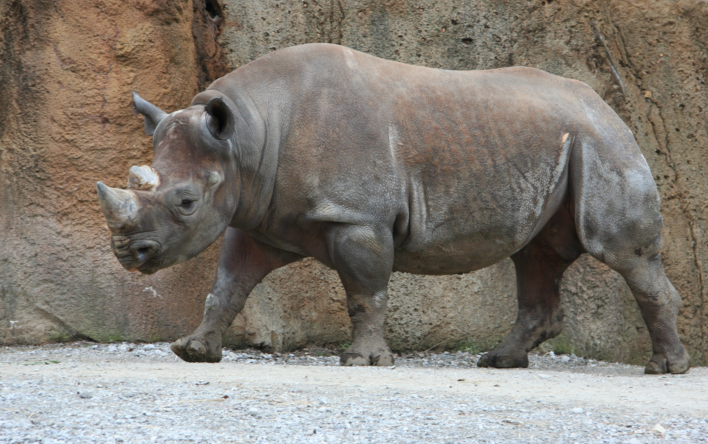

Tê giác Sumatra hay còn gọi là tê giác hai sừng (danh pháp hai phần: Dicerorhinus sumatrensis) là loài tê giác hiện còn tồn tại có kích thước nhỏ nhất, cũng như là một trong số các loài có nhiều lông nhất. Giống như các loài châu Phi, chúng có hai sừng. Đã từng có thời chúng phổ biến rộng rãi ở khu vực Đông Nam Á, nhưng ngày nay chỉ còn khoảng 80 cá thể. Chúng là loài đang ở trong tình trạng cực kỳ nguy cấp do săn bắn trộm, và các cố gắng nhằm phục hồi số lượng của chúng bằng cách nhân giống trong tình trạng bị giam cầm đã gặp rất nhiều khó khăn. Tê giác Sumatra là loài sống sót cuối cùng trong cùng một nhóm với loài tê giác lông mịn đã tuyệt chủng.
Phân loài và đặt tên
Con tê giác Sumatra được ghi nhận đầu tiên bị bắn 16 km (9,9 mi) bên ngoài Fort Marlborough, gần bờ tây của Sumatra vào năm 1793. Bức vẽ con vật và một đoạn văn mô tả nó được gửi tới nhà tự nhiên học Joseph Banks, vào lúc đó là Chủ tịch của Hội Hoàng gia Luân Đôn, người đã cho xuất bản một bài viết về mẫu vật trên vào năm đó. Vào năm 1814, loài này được Johann Fischer von Waldheim đặt tên khoa học. Tính ngữ xác định loài sumatrensis có nghĩa là "của Sumatra", hòn đảo Indonesia nơi loài tê giác lần đầu được tìm thấy.[8] Carl Linnaeus ban đầu phân loại tất cả tê giác vào một chi Rhinoceros; do đó loài này ban đầu được phân loại là Rhinoceros sumatrensis hoặc sumatranus. Joshua Brookes cho rằng tê giác Sumatra có hai sừng nên là một chi riêng biệt so với chi Rhinoceros có một sừng, và cho nó cái tên Didermocerus vào năm 1828. Constantin Wilhelm Lambert Gloger đã đề xuất cái tên Dicerorhinus vào năm 1841. Vào năm 1868, John Edward Gray đề xuất cái tên Ceratorhinus. Thường thì cái tên lâu đời nhất sẽ được sử dụng, nhưng vào năm 1977 Ủy ban Quốc tế về Danh mục Động vật học đã quyết định đặt tên chi chính thức là Dicerorhinus.[3][10] Dicerorhinus bắt nguồn từ Tiếng Hy Lạp, trong đó di (δι, nghĩa là "hai"), cero (κέρας, nghĩa là "sừng"), và rhinos (ρινος, nghĩa là "mũi").
Có 3 phân loại là:
- Dicerorhinus sumatrensis sumatrensis, được gọi là Tê giác Sumatra miền tây, chỉ còn khoảng 75-85 con vào năm 2008 và không thể xác định vào năm 2020, hầu hết trong các Vườn quốc gia Bukit Barisan Selatan, Kerinci Seblat và Gunung Leuser tại Sumatra, nhưng cũng có một số lượng nhỏ ở Vườn quốc gia Way Kambas.
- Dicerorhinus sumatrensis harrissoni, được gọi là Tê giác Borneo hay Tê giác Sumatra miền đông. Phân loài tê giác này từng phổ biến khắp Borneo; ước chừng hiện tại chỉ còn khoảng 15 cá thể tồn tại.
- Dicerorhinus sumatrensis lasiotis, được gọi là Tê giác Sumatra phương bắc hay Tê giác Chittagong hay tê giác lông dày phương Bắc. Phân loài này từng lang thang khắp Ấn Độ và Bangladesh nhưng hiện tại đã được tuyên bố tuyệt chủng tại các quốc gia này. Các báo cáo chưa xác nhận cho rằng có một quần thể nhỏ có thể vẫn đang sống tại Myanmar, nhưng tình hình chính trị tại quốc gia này đã ngăn cản việc xác nhận tình trạng của phân loài.
Phân bố và môi trường sống
Tê giác Sumatra sống ở cả rừng mưa thứ sinh cao nguyên hay đất thấp, đầm lầy và rừng sương mù. Nó sống ở các vùng đồi núi gần với nguồn nước, đặc biệt là các thung lũng dốc với nguồn cây bụi dồi dào. Tê giác Sumatra đã từng sống trong phạm vi liên tục xa lên phía bắc tận Burma, đông Ấn Độ, và Bangladesh. Các báo cáo chưa xác nhận cũng cho rằng nó sống ở Campuchia, Lào và Việt Nam. Tất cả loài biết được đều phát sinh từ đảo Sumatra. Một số nhà bảo tồn hy vọng tê giác Sumatra có thể vẫn còn ở Burma, mặc dù điều này có khả năng không lớn. Các biến động về chính trị ở Burma đã ngăn chặn việc đánh giá hoặc nghiên cứu về khả năng sinh tồn của loài tại đây.
Tê giác Sumatra phân bố rải rác và rộng rãi trong khoảng phân bố của chúng, rộng hơn nhiều so với các loài tê giác châu Á khác, điều này đã gây khó khăn cho các nhà bảo tồn trong việc bảo vệ các cá thể của loài một cách hiệu quả.
Phân tích di truyền của quần thể tê giác Sumatra đã xác định được ba dòng di truyền riêng biệt.[7] Eo biển giữa Sumatra và Malaysia không phải là rào cản đáng kể đối với tê giác như dãy núi Barisan dọc theo chiều dài Sumatra, vì tê giác ở phía đông Sumatra và Bán đảo Malaysia có mối liên hệ chặt chẽ hơn so với tê giác ở phía bên kia dãy núi ở phía tây Sumatra. Trên thực tế, tê giác Sumatra phía đông và tê giác Malaysia cho thấy ít phương sai di truyền đến nỗi hai quần thể này dường như đã không hề tách rời nhau trong thời kỳ Pleistocene, khi mực nước biển thấp hơn nhiều và Sumatra là một phần của lục địa. Tuy nhiên, cả hai quần thể Sumatra và Malaysia đều đủ gần về mặt di truyền đến nỗi việc lai giống sẽ không có vấn đề gì. Mặt khác, tê giác Borneo lại khác biệt đủ để các nhà di truyền học bảo tồn khuyên không nên lai chéo dòng này với các quần thể khác. Các nhà di truyền học bảo tồn gần đây đã bắt đầu nghiên cứu tính đa dạng của nhóm gen trong các quần thể này bằng cách xác định các locus vi vệ tinh. Kết quả thử nghiệm ban đầu cho thấy mức độ biến đổi trong quần thể tê giác Sumatra tương đương với những cá thể trong quần thể tê giác châu Phi ít nguy cấp hơn, nhưng sự đa dạng di truyền của tê giác Sumatra là một lĩnh vực còn đang được tiếp tục nghiên cứu.
Các yếu tố ảnh hưởng tới môi trường sống của nó là nước, sự hiện diện của các loài thú săn mồi lớn khác (sự canh tranh), sự dồi dào của con mồi (các loài động vật móng guốc từ trung bình tới lớn), mật độ dân cư địa phương cũng như các khu vực sinh sản phù hợp.
Bảo tồn
Tê giác Sumatra từng có số lượng nhiều tại khắp Đông Nam Á. Giờ ước tính có ít hơn 100 cá thể còn sót lại.] Loài này được phân loại là cực kỳ nguy cấp (chủ yếu là do săn bắt trái phép) trong khi đó cuộc khảo sát gần đây nhất vào năm 2008 ước tính có khoảng 250 cá thể còn sống. Từ đầu thập niên 1990, việc sụt giảm số lượng cá thể được ước tính là hơn 50% mỗi thập kỷ, các quần thể rải rác giờ đây đối mặt với nguy cơ suy giảm do giao phối cận huyết. Hầu hết các môi trường sống còn lại là các vùng núi gần như không thể tiếp cận được tại Indonesia.